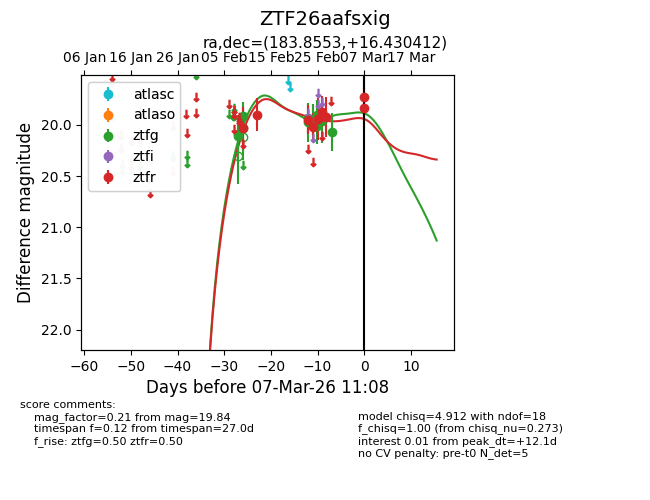
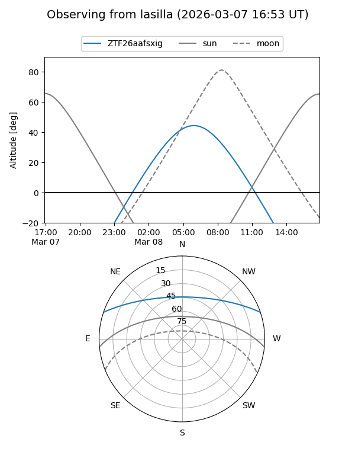
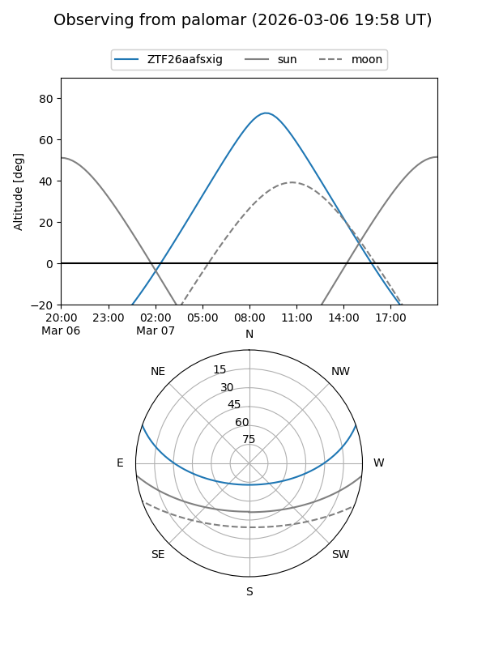
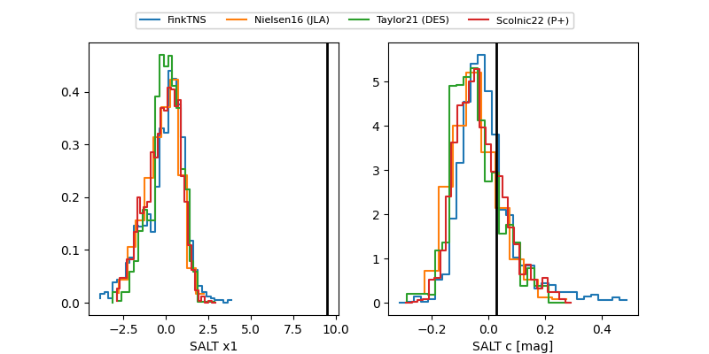

ZTF26aafsxig
Target ZTF26aafsxig at 2026-03-07 11:11
Aliases and brokers:
FINK: link
Lasair: link
ALeRCE: link
alt names
ZTF26aafsxig (ztf,fink_ztf)
Coordinates:
equatorial (ra, dec) = 183.8553,+16.43041
equatorial (HMS+DMS) = 12:15:25.28,+16:25:49.48
galactic (l, b) = (263.1423,+76.43400)
Flags:
Photometry:
last ztfg=20.07, ztfr=19.84
11 ztfg, 9 ztfr detections
Lightcurve

Visibility


Additional plots
